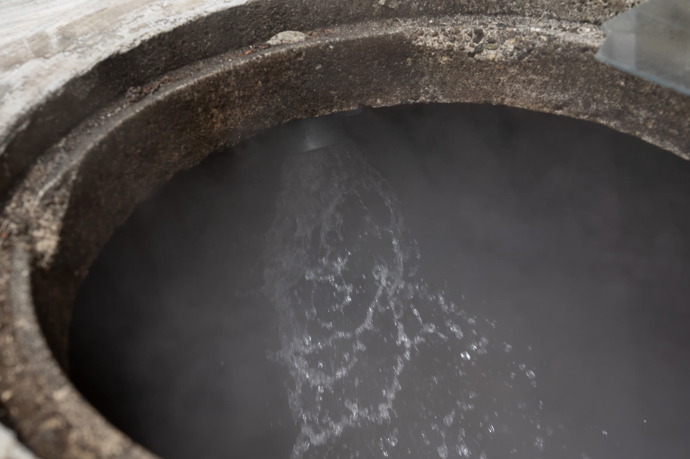

10:00 to 10:00
the next day.
- Weekdays
- ¥880
- Weekends
- ¥980
- Ages 3–11
- ¥330
- Early morning
- ¥550
Junior-high age (12 and over) for the standard price. Towel set ¥220; sauna hats and ponchos are free. The 2nd floor lounge is ¥700 extra.
All pricesWhat is in here


All three are images for illustration, not photographs of this building.
How it works
You pay on the way out, not on the way in. Twelve steps from the door to the door.
- 1Put your shoes in a lockerThe key you take out is your wristband. Everything you use inside is recorded on it.
- 2Show the band at the deskThey register your plan. You do not pay yet.
- 3Take a locker on the 3rd floorThis is a different key from the shoe locker. Only this one goes with you.
- 4Undress completelyNo swimwear. A small towel may come in with you.
- 5Wash before you soakSit at a shower and wash your whole body. This part matters.
- 6Soak in the bathTie long hair up. Keep your towel out of the water.
- 7Sauna, cold bath, open airAll three are on the roof. About 8–12 min, 1–2 min, 5–10 min.
- 8Dry off before the changing roomWipe down so the floor stays dry.
- 9Dry your hairDryers are in the changing room.
- 10Back to the 1st floorFood, massage, or the lounge on the 2nd floor.
- 11Pay at the machineHold up the shoe-locker key. It adds everything up.
- 12Collect your shoes and goScan the QR code the machine gives you at the exit.
If anything is unclear, ask at the front desk.
Where this water comes from
No hot spring runs under this building. The water is drawn at the Kamiya spring in Yugawara, an hour and a half away, and driven here every day.


Tattoos
Guests with tattoos, including temporary ones, may enter if they are covered. We sell cover stickers at the front desk: 10×15cm, ¥220 each, up to three. If three stickers do not cover them, we are sorry to say we cannot let you in. Please check before you travel.
Things worth knowing
Everyone bathes undressed. Baths are separated by gender.
Or bring your own. Shampoo, conditioner and body soap are provided.
A guardian of the same gender, 18 or over, must come with them. Mixed bathing is not possible from primary-school age.
Contagious skin conditions, or if you have been drinking heavily.